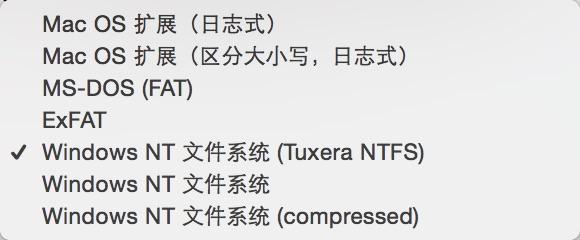

Mac 是否区分大小写
目录
真的是区分大小写么？
熟悉过Linux的同学一定知道，在Linux中，文件是区分大小写的。
而对于相同祖先的Mac OS来说，应该也是如此。大家想当然的认为是这样的。
可是，事实却不是这样的。
在Mac OS中，默认是不区分大小写的。
这个大家可以进行如下的实验
$ echo a > a
$ echo A > A
$ ls
大家可以看一下结果，是不是
a
这样的么？
说明Mac OS确实是不区分大小写的。
我想要区分大小写怎么办？
前面我说过了，默认是不区分，但是我们可以更改文件分区来区分大小写。

我是用的我的一个移动硬盘来看的分区，所以会在window的格式上有对勾，请不要在意😂
如图，默认是日志式，你可以选择区分大小写，日志式就可以了